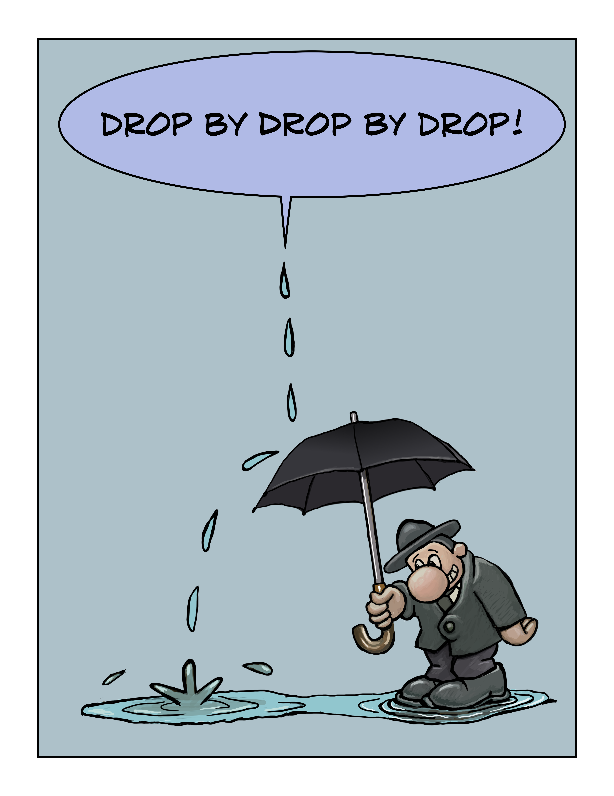
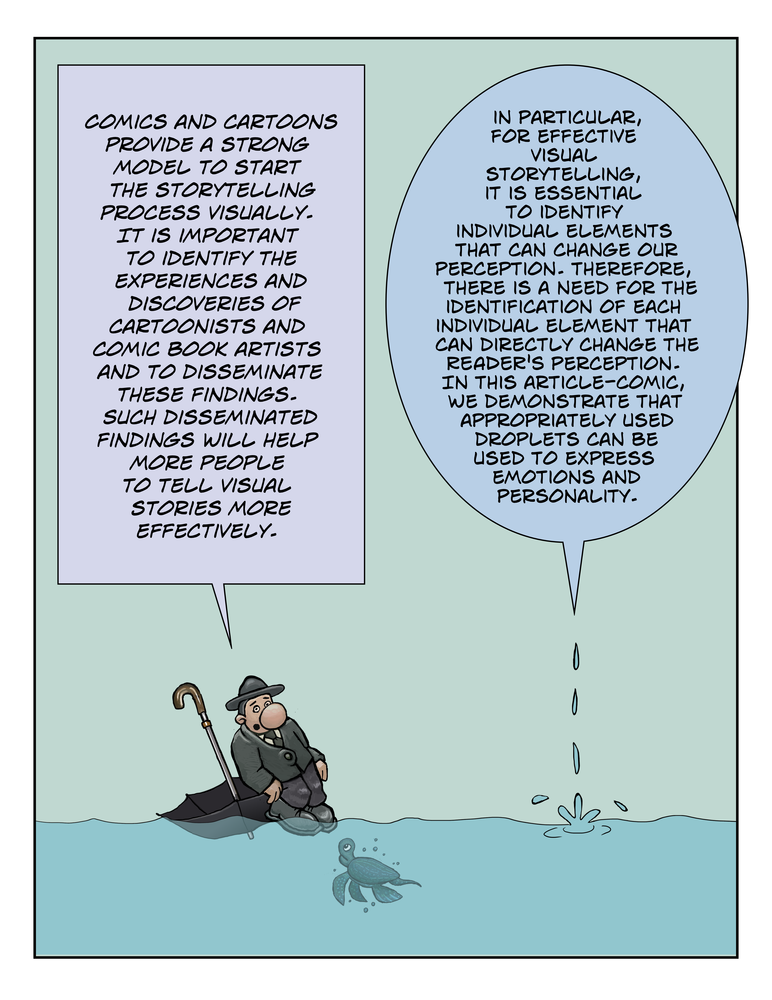
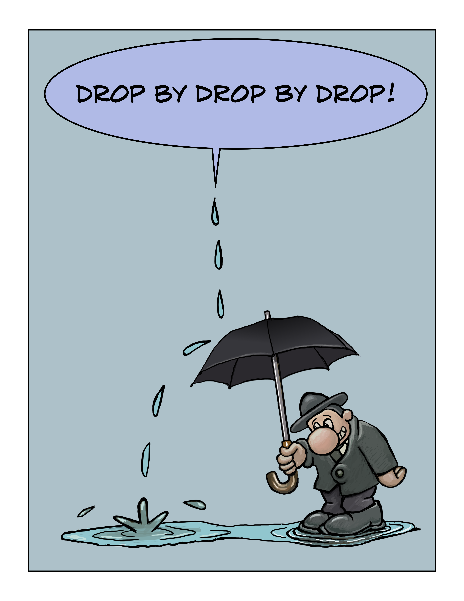
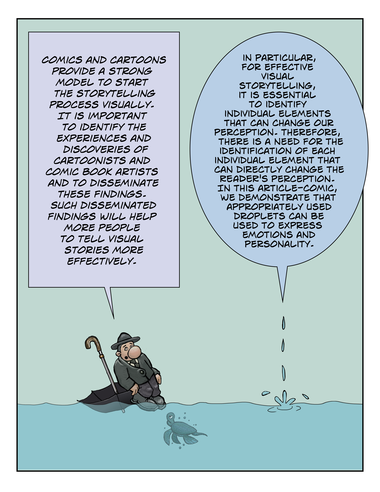
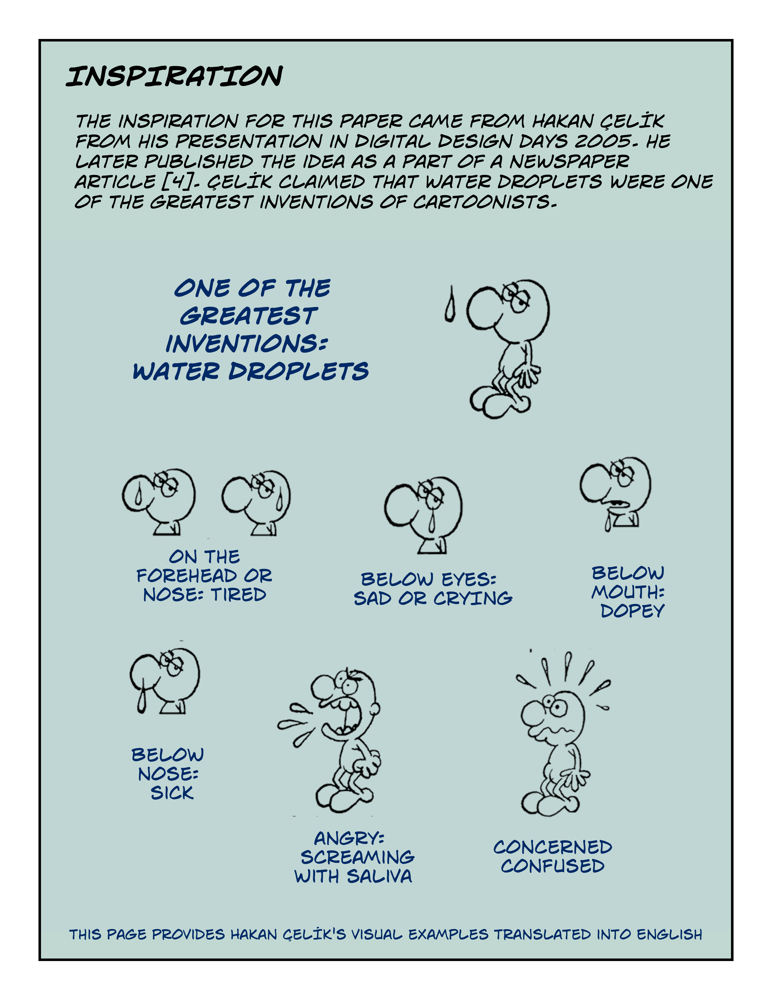
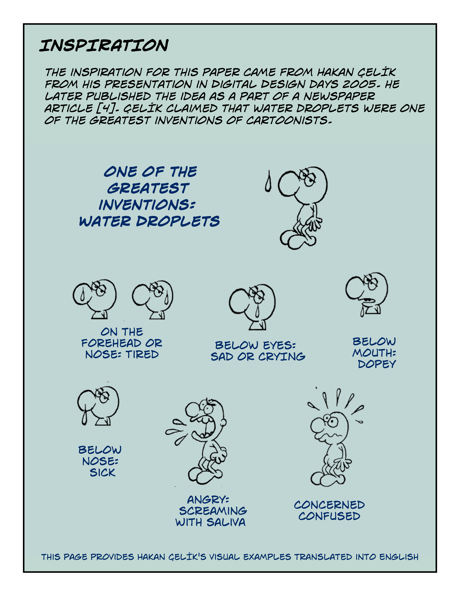
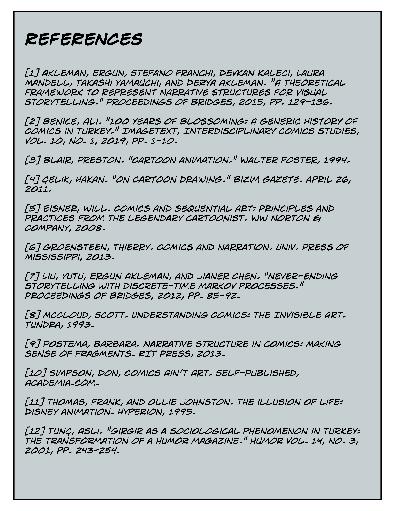
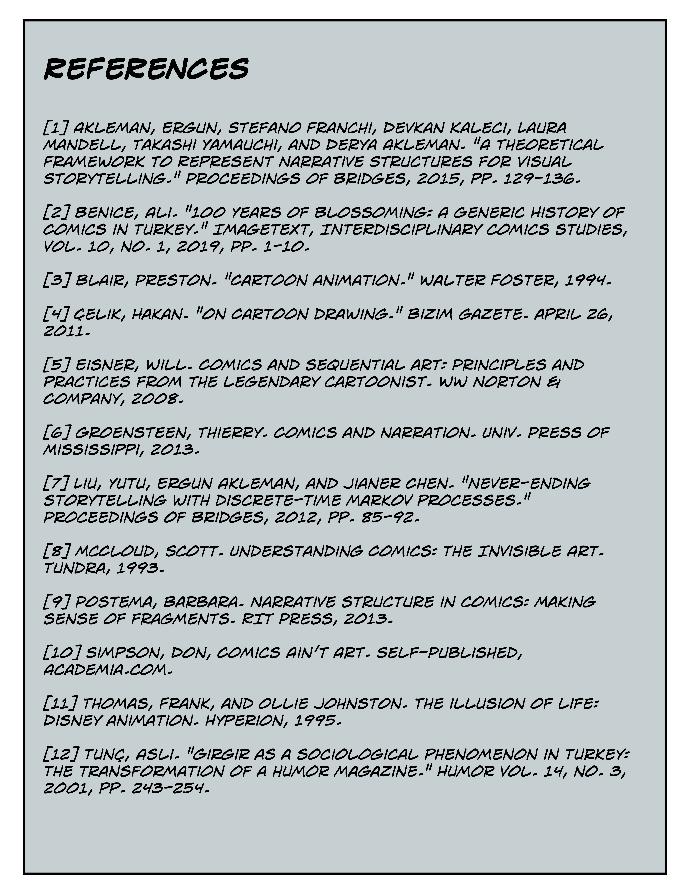

Ergun Akleman | Texas A&M University
Hakan Çelik | Independent Artist
Posted 1 May 2020

 




 



 


Ergun Akleman is a professor in the departments of Visualization & Computer Science and Engineering. He has been at Texas A&M University since 1995. He received his Ph.D. degree in Electrical and Computer Engineering from the Georgia Institute of Technology in 1992. He has published more than 150 technical papers in the areas of shape modeling, image synthesis, artistic depiction, image based lighting, texture and tiles, computer aided caricature, electrical engineering, and computer aided architecture. He is also a professional cartoonist, illustrator, and caricaturist who has published more than 500 cartoons, illustrations, and caricatures.
Hakan Çelik received his B.S. degree in Civil Engineering from Yildiz Technical University in 1982. He has worked as a cartoonist for almost all comic magazines of Turkey, including Girgir, Firt, Atmaca, Makara, and HBR Maymun. He has also worked for many newspapers as a cartoonist, including Milliyet and Cumhuriyet.
Recommended citation:
Akleman, Ergun, and Hakan Çelik. “Droplets.” Sequentials, vol. 1, no. 4, 2020.